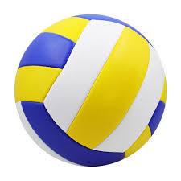
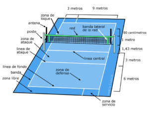

El volleyball fue creado en 1895 por William G. Morgan, un director de educación física de la YMCA en
Holyoke, Massachusetts. En un principio se llamó "mintonette".
Morgan buscó crear un juego de interior con equipo reducido, fácil de acceder y de bajo costo.
Quería un juego que fuera menos fricción que el baloncesto, pero que mantuviera la diversión y
la competencia.
Tomó elementos de otros deportes, como el tenis y el balonmano.
Peso del balón
De 260 a 280 gramos
Circunferencia del balón
De 65 a 67 cms.
Medidas de la cancha
Mide 18x9 metros
Puntos por set
25 puntos con una ventaja mínima de 2 tantos
Altura de la red
Hombres: 2.43 m.
Mujeres: 2.24 m.
Hombres juvenil: 2.37 m.
Mujeres juvenil: 2.18 m.
2. Evolución
El volleyball ha ido ganando popularidad y se ha convertido en uno de los deportes de equipo más
practicados en todo el mundo. Durante sus primeros años, el voleibol era un deporte más lento y
menos técnico que el que conocemos hoy en día. Sin embargo, con el tiempo, ha ido evolucionando
y adoptando diferentes reglas y técnicas que lo han transformado en un juego más dinámico y
competitivo.
Una de las principales innovaciones en la evolución del volleyballl fue la introducción del saque
por encima de la cabeza, conocido como «saque en suspensión», que permitió una mayor potencia y
precisión en el servicio. Esta técnica revolucionó el juego y abrió nuevas posibilidades estratégicas
para los jugadores.
Datos importantes:
En 1896, Alfred Halstead, un observador, se dio cuenta de que el deporte era de volea y pasó a
llamarse volleyball.
Las primeras reglas se publicaron a principios del siglo XX.
En 1947 se creó la Federación Internacional de Volleyball (FIVB).
3. ¿Qué es?
Es un deporte que consiste en el encuentro de dos equipos compuesto por
seis jugadores cada uno, que se enfrentan en una cancha dividida por una red o malla sobre la cual
deben pasar una pelota a fin de que toque el suelo del campo contrario para hacer una anotación. Por
tanto, el objetivo del volleyball es lograr anotar puntos con los pases de pelota hacia el campo
adversario.

4. Posiciones
Delantero izquierdo
Delantero centro
Delantero derecho
Zaguero izquierdo
Zaguero centro
Zaguero derecho

5. Movimientos del juego
Saque: Acción de poner en juego el balón, lanzando o soltando el balón y golpeando con la mano. Su
finalidad principal es ofensiva, marcar punto al contrario, o dificultar al máximo la recepción por
parte del contrario.
Pase: El balón se pasa utilizando suavemente las manos, por encima de la cabeza y con las yemas de
los dedos hacia arriba; impulsándolo en la dirección deseada pero sin agarrarlo ni lanzarlo.
Remate: Acción que pone fin a una jugada ofensiva. El jugador corre, salta y golpea el balón con
la palma de la mano por encima de la red tirando el balón contra el suelo.
Bloqueo: Toda acción destinada a interceptar el ataque del equipo contrario, saltando junto a la
red, con los brazos alzados y sin meterlos en el campo contrario. Está prohibido bloquear el saque
adversario.
Recepción: La forma más común de recibir un saque es uniendo las manos por el dorso y ayudado
por la flexión de las piernas, el balón es golpeado desde abajo hacia arriba por ambos antebrazos
logrando así un rebote vertical con una gran elevación.
6. Participación en los juegos olímpicos
Japón ganó la primera medalla de oro en los Juegos Olímpicos de verano de 1964.
La Unión Soviética ganó las medallas de oro en 1968 y 1972.
La República Popular de China ganó las medallas de oro en 1984 y 2004.
Cuba ganó las medallas de oro en 1992, 1996 y 2000.